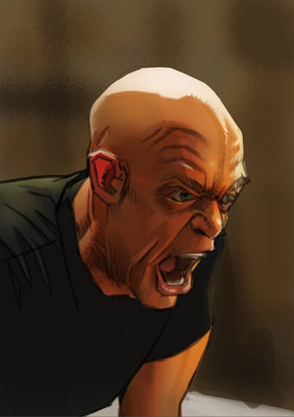

Inspirations
When it comes to creation, everything comes from a source. These sources root to the making of something original in its own right. Here are some things that inspire me.
Aesthetic
Genrally, the look I felt to align with was the look of 2000s styled art, such as the images shown in About me page.
Cinematography
The way a thing is filmed is integral ot the way it is percieved. People subconciously pick up on expressions, actions, and form that are exercised by actors in films and media. These details can be easily noticed if one decided to pay attention to them. As an example, we can look at a scene from the 2014 film, Whiplash. Spoiler warning for the movie, of course. The scene I wish to focus on is the climax of the movie where the main character, Andrew Neiman is humiliated in front of a proffessional jazz festival performance by his former teacher when Neiman is sabatoged into practicing the wrong sheet music. Instead of giving up and giving in, he walks back and plays the beginning of a song he had practiced without the approval of his antagonistic techer, amazing him an displaying the best jazz drumming in cinema. Now, how does this relate to my inspirations? It doesn't. Not at all. Except for the fact that it is very cool, and that it appeals to me. Not to mention the amazing visuals paired by the tense musical montages throughout the movie as a whole.
Musical Taste
Since I spend most of my freetime with music on in the background, it's safe to say that it has an influential effect on my thought process. This could also be reflected in the sense that my thought process affects the music I surround myself with, but who really cares about any of that.